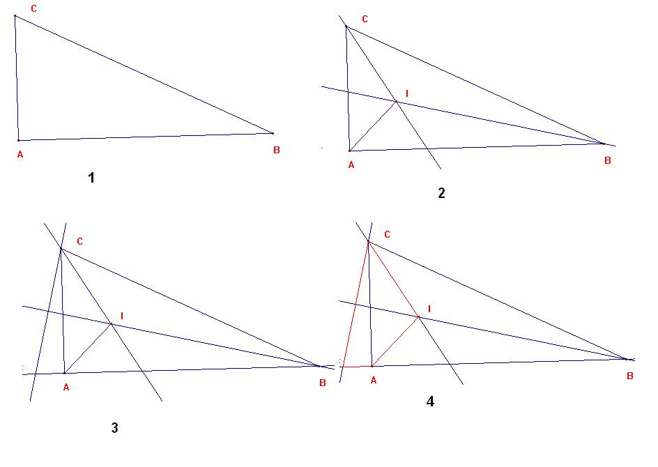
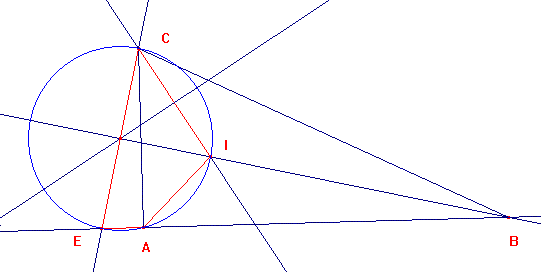

Problema 89
| Demostrar que en un triángulo BAC, rectángulo en A, el producto de las distancias del centro I del círculo inscrito a los vértices B y C, es igual al producto de la hipotenusa BC por la distancia de I al vértice del ángulo recto. |
Revista de Matemática Elemental,N.39 ( 4ª Serie) 1941, Tomo I, (p. 156-157,)
Solución del editor:
Sea ABC el triángulo.
1.- ABC.
2.- Tomemos EA perpendicular a AC con < ICE = 45º.
3.- Es: < ECI + < IAE = 45º + < IAC+ < CAE= 45º + 45º + 90º =180º, por lo que CEAI está inscrito en una circunfeencia

4.- < CIE= <CAE = 90º. Luego el triángulo ICE es rectángulo isósceles. IE=IC.

5.- < AEI = < ACI = < C /2; < IAE = 135º = < CIB. Luego EAI es semejante a CIB.
6.- EI / AI = CB / IB; y, cqd, EI * IB = AI * CB, o : CI * IB = AI * CB
Ricardo Barroso. Profesor TEU del Departamento de Didáctica de las Matemáticas. Unversidad de Sevilla.